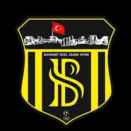
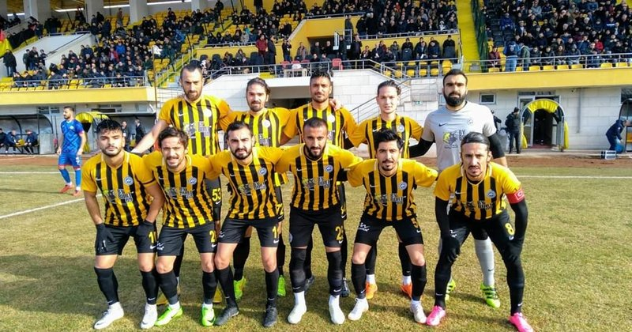
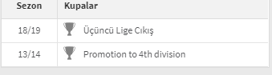

LOGO |
PAOK FUTBOL KLÜBÜ TARİHİ1973'te Siyah-Sarı renklerle kurulan Bayburtspor, 1984-1985 sezonunda tarihinde ilk kez 3. Lig'de oynamaya başladı. 1985-1986 sezonunda 3. Lig 1. Grup'un şampiyonu olarak 2. Lig'e yükseldi. 1986-1987 sezonunda son maçta 1-1 berabere kalarak aynı puana sahip olup averajla gerisinde kaldığı Şekerspor'un yerine küme düşen Bayburtspor, ligde iddiası olmayan Kayserispor'un kendi sahasında Şekerspor'a 4-0 kaybederken şike yaptığı gerekçesiyle savcılığa suç duyurusunda bulundu. Türkiye Futbol Federasyonu ise Şike Tahkik Kurulu'nun verdiği rapor doğrultusunda şikenin ispatlanamadığına hükmetti. Bunun üzerine, TFF aleyhine yürütmeyi durdurma talebini de içeren dilekçesini idare mahkemesine veren Bayburtspor, Ankara 5. İdare Mahkemesi'nin 29 Temmuz 1987'de verdiği yürütmeyi durdurma kararı sonrası tekrar 2. Lig'e alındı. Ancak, lige hiçbir hazırlık yapamadan katılan Bayburtspor 1987-1988 sezonunu sonuncu olarak tamamladı ve 3. Lig'e düştü. 1988-2002 yılları arasında 3. Lig'de mücadele eden Bayburtspor, 2001-2002 sezonunda Amatör Lig'e düştü. |
OYUNCULAR *"69 İsmail CENGİZ "*| *"88 Selcuk HAKALMAZ"*| *"72 İsmet KAVUŞTU "*| *"61 Mahmut EMİR "*| *"26 Onur ARIKAN "*| *"33 Burak SARI "*| *"6 Mert ÖZYILDIRIM"*| *"5 Okan YILDIZ "*| *"9 Sertan İRKİLMEZ"*| *"27 Tolga ŞAHİN "*| *"95 Onur GÜNEL "*|Takımımız 19/20 sezonunda liginde yenilmemezlik rekorunu kırmıştır . |
BAŞARILAR |
İDARİ VE TEKNİK KADRO
TEKNİK DİREKTÖR YARDIMCI ANTRENÖR MÜDÜR |